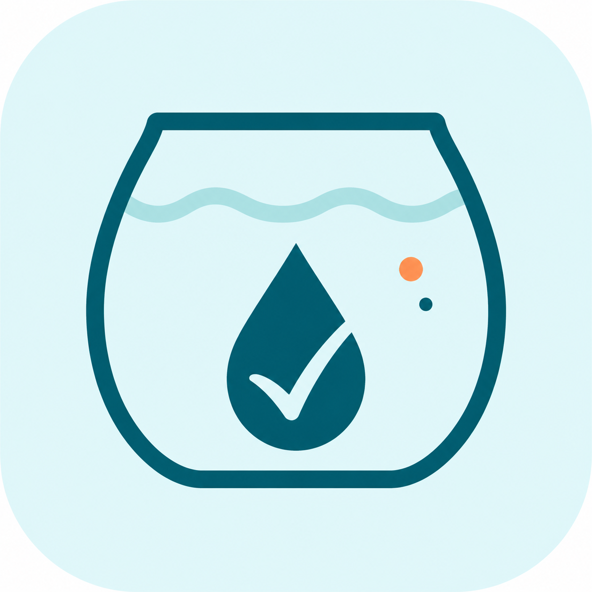
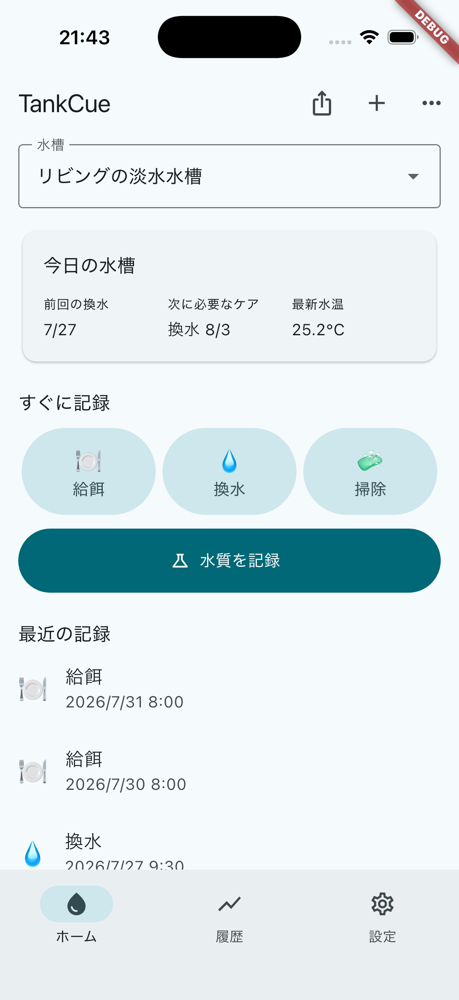
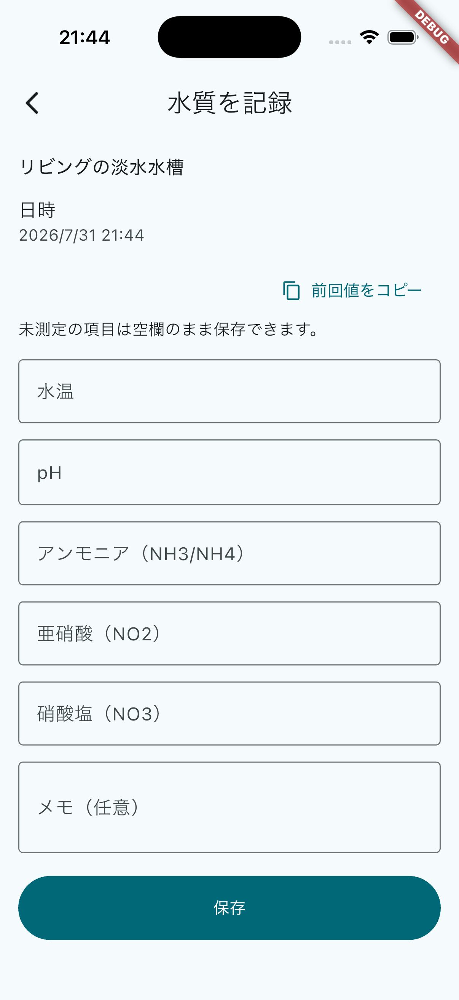
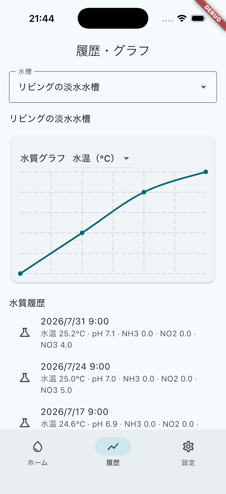
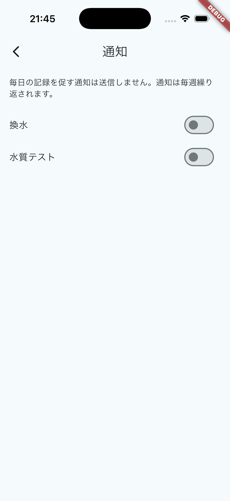
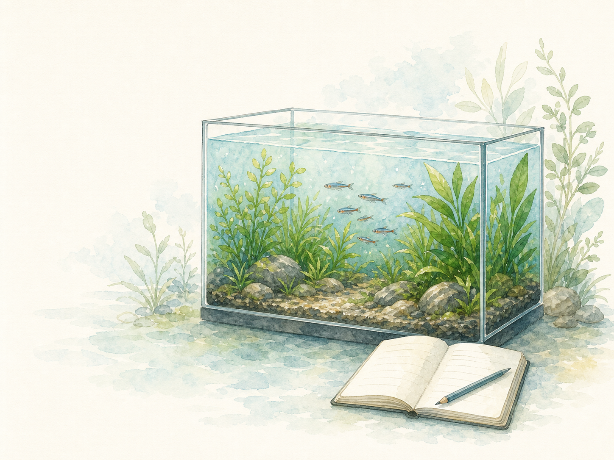

TankCue無料ではじめる、 淡水アクアリウムの水槽管理アプリ
水換え、給餌、掃除、水質をかんたんに記録。履歴とグラフで、水槽の変化を振り返れます。
無料でダウンロード · ログイン不要

01
水槽のお世話、 覚えていますか？
前回いつ水換えしたか、水質を測った日はいつか。TankCueなら、日々のお世話を無理なく記録できます。
TankCueは、 水槽のためのシンプルなノートです。
01ケアをすぐ記録
02水質をまとめて管理
03変化をあとから確認
02
水換えも、給餌も、掃除も。 数タップで記録。
日時やメモと一緒に、日々のお世話を残せます。
給餌 · 水換え · 掃除
03
水槽の変化を、 履歴とグラフで確認。
水温、pH、アンモニア、亜硝酸、硝酸塩の5項目を記録。測定した項目だけを保存することもできます。
水温 · pH · アンモニア · 亜硝酸 · 硝酸塩
04
次のお世話を忘れず、 水槽ごとにすっきり管理。
週次リマインダーと複数水槽に対応しています。

05
記録したデータを、 いつでも持ち出せます。
ケア履歴と水質データはCSV形式で書き出せます。
CSV · 自分の記録を自由に活用TankCue.csv水槽ケアの記録

よくある質問
無料でダウンロードでき、基本的な水槽記録機能を利用できます。広告を削除する任意の買い切り購入があります。
いいえ。アカウント登録やログインなしで利用できます。
水温、pH、アンモニア、亜硝酸、硝酸塩の5項目を記録できます。
はい。水槽ごとにケア履歴と水質履歴を分けて管理できます。
はい。記録したデータをCSV形式で書き出せます。
水槽の毎日に、TankCueを。
無料ではじめられる、淡水アクアリウムのための水槽ノート。